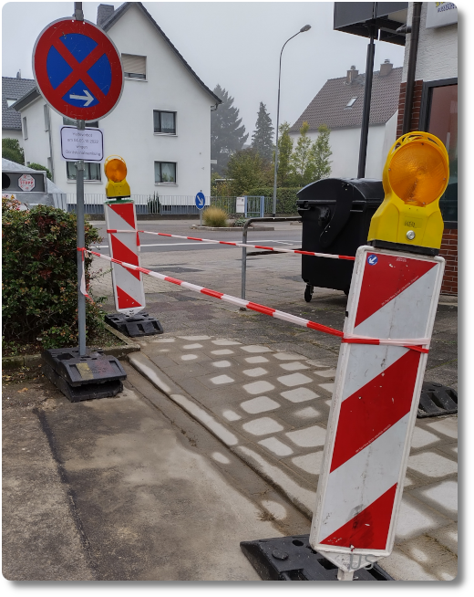

Ebene(re) Wege - objektiv vermessen
In der Nähe unserer Wohnung gab es bis vor kurzem eine Fußgängerverbindung zweier Straßen, die für Rollstuhl- oder Radfahrer unkomfortabel zu überqueren war. Irgendwann ist auch mir das aufgefallen, und ich habe über den Bürgermelder unserer Stadt eine Nachricht dazu hinterlassen. Freude, oh Freude: ein paar Monate später fand an dieser Stelle tatsächlich der Umbau statt.
